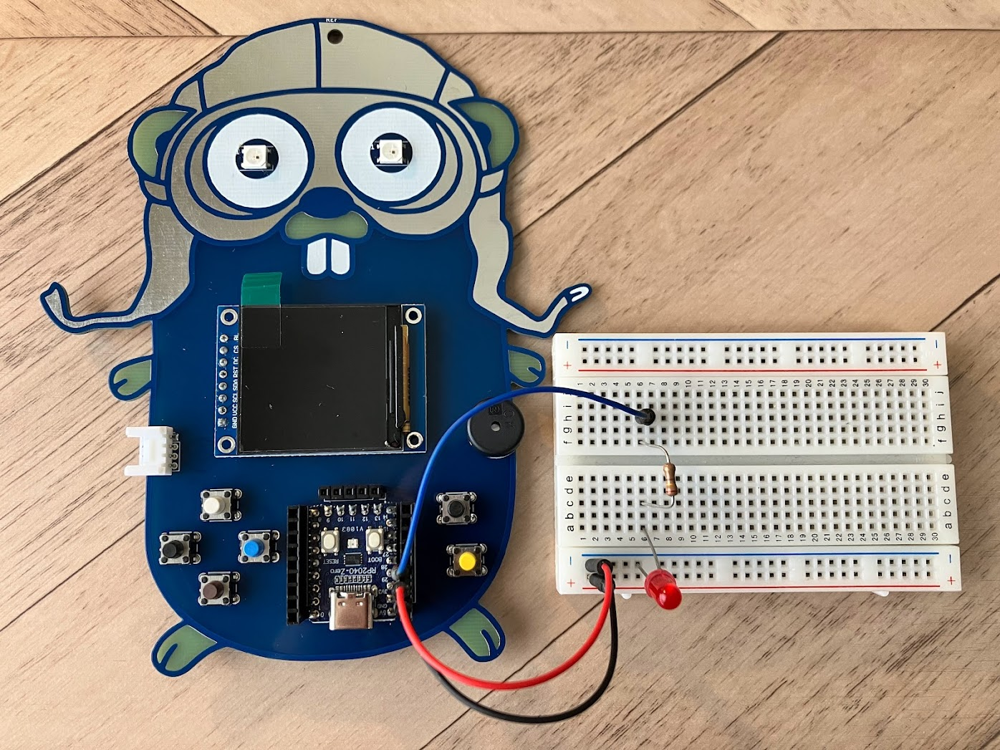
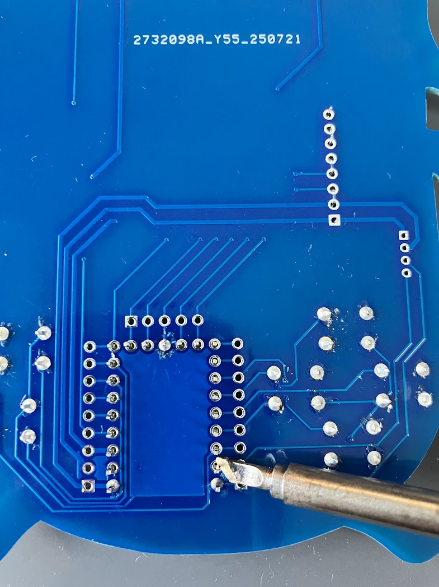

こんにちは、satokenです。TinyGo Conference 2025の中では複数のワークショップを行う予定です。今回は私が担当するワークショップの内容を紹介します。
TinyGo Conferenceのイベント自体については以下の記事をご覧ください。
TinyGo Conference 2025 in JAPAN を開催します
私はGoのマスコットキャラクターのGopherくんをデザインした基板を作っています。ワークショップではこの基板に部品をはんだ付けをして組み立てを行い、プログラムを書き込むところまで行います。作成した基板ではTinyGoを使用して電子工作やkoebitenでミニゲームを遊んだりすることができます。
作成した基板はそのままお持ち帰り頂けます。基板とパーツ込みで価格は3000円を予定しています。


様々なGopherくんのデサインの基板を用意する予定です！ぜひご自分でGopherくん基板を作ってみませんか？
ワークショップへの参加申し込みなどは現在検討中ですので、追って展開致します。TinyGo Conferenceとワークショップへのご参加を心よりお待ちしております。